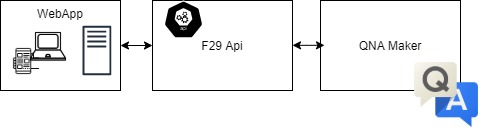

2.3. Level 3: Component¶
Taking into account the division by containers exposed in the previous point, we are now going to study in detail the internal architecture and the components that make up each one of them.
2.3.1. Webapp¶
Health29’s architecture uses a client-server software design model, so that the architecture of the webapp is like:

For the client we use the Angular 5 framework, and for the nodejs - express server, in which we have implemented an API to connect to the CosmoDb databases using mongoose for its management.

These modules are intercommunicated using a REST interface, that is, the communication is established according to the HTTP protocol.
This communication between client and server is mainly used for data management, i.e. to obtain, add or modify information from databases. For this purpose, an HTTP service will be used to allow, through requests from the client to the server, to carry out these operations. The server will listen to these requests and will perform the appropriate operations to give an answer to the client.
The Health29 platform has been developed as a Platform as a Service (PaaS) in Azure. That is, an App Service has been created that contains the client-server webapp. In particular, the App Service created is health29
2.3.2. External APIs¶
Foundation29 API, implemented by Foundation29 to use it as an intermediary between the webapp and the azure qnamaker service. It is used for QNA functions for the different roles of Health29 platform.

The Monarch API, is an external API that is used for the diagnostic functions for the different roles of the Health29 platform.

2.3.3. Azure cognitive services¶
As explained in the previous section of this document (2.2.Containers) several “Azure cognitive services” will be used.
In particular, services will be used for the conversion of formats, for the translation of texts and for the creation of databases for the FAQs of each group of patients.

All of them will communicate with webapp.
In the following subsections each of them is introduced.
2.3.3.1. Computer Vision¶
It is used in the symptoms section. This service converts images into text in order to obtain the symptoms.
You can configure and use this azure service by following the steps in the Microsoft guide. And access the one that uses the Health29 platform from this link.
2.3.3.2. Qna maker¶
QnA Maker is a cloud-based Natural Language Processing (NLP) service that easily creates a natural conversation layer with the data.
In Health29 it is used to manage the FAQs in different ways and from different points of the platform:
To show the list of FAQs to the users. From the user profile you can access the FAQ page where you will be shown the results of the service consultation in the form of a list.
So that the administrators of the platform can manage the list of FAQs. From the administrator profile you can add, delete and edit the list of FAQs of the service.
It is integrated into the healthbot to allow users to ask questions or doubts in a more guided and personal way.
In this case the communication of the webapp with this service is requested from the client through an external API that acts as an intermediary. However, there will also be information that will be stored in the databases, therefore, the client will also establish a communication with the server who will manage the storage of this information.
You can configure and use this azure service by following the steps in the Microsoft guide. And access the one that uses the Health29 platform from this link
In particular for Health29 the following databases have been created in qnamaker: My knowledge bases. One would be created for each group of patients to contain their specific information and this in turn would be replicated in as many languages as the question-answer pairs are translated on the Health29 platform.
2.3.3.3. Translator¶
This service is used to be able to make a translation of the different datapoints, to add a new language to the platform (it translates all the tags), and to translate into English the text obtained from the vision service to call the NCR service that extracts the symptoms.
You can configure and use this azure service by following the steps in the Microsoft guide.
And access the two that uses the Health29 platform from these links:
2.3.4. Azure healthbot¶
Health29 has an assistant to guide the user in the use of the platform.

For this purpose, the Azure Healthbot service is used.
It guides the user through different configured scenarios where he or she can perform different actions. Initially we can divide the scenarios into three blocks:
New user scenario or first time in the platform. The chatbot will provide the user with help and guidance in this process and provide he or she with more information if required.
Scenario of pending notifications. In case the user has any pending notifications, he or she will be informed during the first run of the assistant.
Main scenario. A series of guided scenarios will appear where the user will be able to make different types of queries.
You can configure and use this azure service by following the steps in the Microsoft guide. And access the one that uses the Health29 platform from this link.
In particular for Health29 the following chatbots have been created (All of them use the previous App Service):
2.3.5. Azure blobs¶
Azure Blob storage is Microsoft’s object storage solution for the cloud. Blob storage is optimized for storing massive amounts of unstructured data. Unstructured data is data that doesn’t adhere to a particular data model or definition, such as text or binary data.
Two “Storage accounts (classic)” container called “blobgenomics” adn “health29support” has been created to store information from various sections of Health29. For the first one:
Medical care section. Here, one container per patient is created to store their medical information.
Diagnosis section. As in the previous point, one container per patient is created to store the diagnostic information.
User profile section. Used to export patient data in PDF or JSON format. A container per patient is also created.
Genotype section. One container per patient is created to store the genotype data of the patient.
Phenotype section. Same as above but for saving the phenotype data.
The second has been created to manage the data of support section. Unlike the previous ones, only a container named “filessupport” is created for this data to store the data related to the Health29 platform support.
You can configure and use this azure service by following the steps in the Microsoft guide. And access the two that uses the Health29 platform from these links:

2.3.6. Other services¶
The Genomics Functions apps for phenolyze and exomize tasks. It is an Azure service.
The DiagnosisApi is an App Service of Azure that is used for consulting the symptons of a diagnose. It is an Azure service.
2.3.7. Databases¶
We have several separate collections in two databases, one for accounts and general things, and one for patient data.
The development and test environments share the same databases, while the production ones do not. So, in total we have 4 databases:
Two for accounts
Development and testing: health29-accounts-test
Production: health29-accounts-final
Two for patient data
Development and testing: health29-data-test
Production: health29-data-final

Access from the Health29 platform is done from the application server,using mongoose.